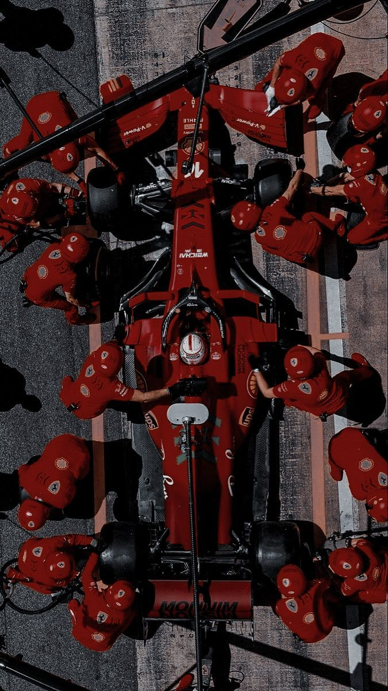

Términos Básicos
Pole Position: Es la primera posición en la parrilla de salida. El piloto que logra el mejor tiempo en la clasificación se gana este lugar. Salir desde la pole te da una ventaja porque estás adelante de todos y podés evitar el caos que suele haber en las primeras curvas.
Parrilla de salida (Grid): Es el orden en el que largan los autos el domingo, según los tiempos que hicieron en la clasificación. Se organiza en filas de a dos autos.
Boxes (Pits): El lugar donde los autos entran durante la carrera para cambiar neumáticos, reparar algo o incluso abandonar si hay un problema serio. El equipo ahí es rapidísimo, pueden cambiar las cuatro ruedas en menos de 3 segundos.
Pit Stop: La parada en boxes. Estratégicamente clave: elegir el momento justo para parar puede hacerte ganar o perder posiciones.
Undercut: El undercut es cuando parás antes que tu rival y salís con neumáticos nuevos para ganar tiempo y superarlo cuando él pare.
Overcut: El overcut es lo contrario: te quedás en pista más tiempo, confiando en que tus tiempos sean mejores que los del otro con neumáticos fríos o usados.
DRS (Drag Reduction System): Un sistema que permite que el alerón trasero se abra en ciertas zonas del circuito, reduciendo la resistencia del aire y dándole al auto un extra de velocidad para facilitar los adelantamientos. Solo se puede usar si estás a menos de un segundo del auto que va adelante.
Vuelta de formación: Es la vuelta que hacen antes de largar, para calentar neumáticos y frenos. Sirve también para chequear que todo esté bien con el auto.
Safety Car: Cuando hay un accidente o algo peligroso en la pista, sale el auto de seguridad. Los pilotos deben ir detrás de él sin adelantarse, y la carrera se neutraliza. A veces esto cambia completamente el desarrollo de la carrera
Virtual Safety Car (VSC): Similar al Safety Car, pero virtual: todos deben reducir la velocidad a un ritmo específico sin que entre un auto real a pista. Es como una pausa parcial.
Parc Fermé: Es cuando los autos están bajo "custodia" después de la clasificación. No se les puede hacer casi ningún cambio. Esto es para que no haya trampas entre la quali y la carrera
Setup: Es cómo se configura el auto: suspensión, altura, alerones, etc. Cada pista necesita un setup distinto, y cada piloto tiene su estilo, así que ajustan el coche para que se sienta cómodo y rápido.
Tanda corta: pocas vueltas, con poco combustible y neumáticos nuevos, para buscar el mejor tiempo (como en clasificación).
Tanda larga: muchas vueltas, simulando una carrera para ver cómo se comporta el auto con el paso del tiempo.
Graining: cuando el caucho se desgasta de forma irregular y se forman como bolitas que hacen perder agarre.
Blistering: cuando el neumático se recalienta y se forman burbujas que lo dañan.
